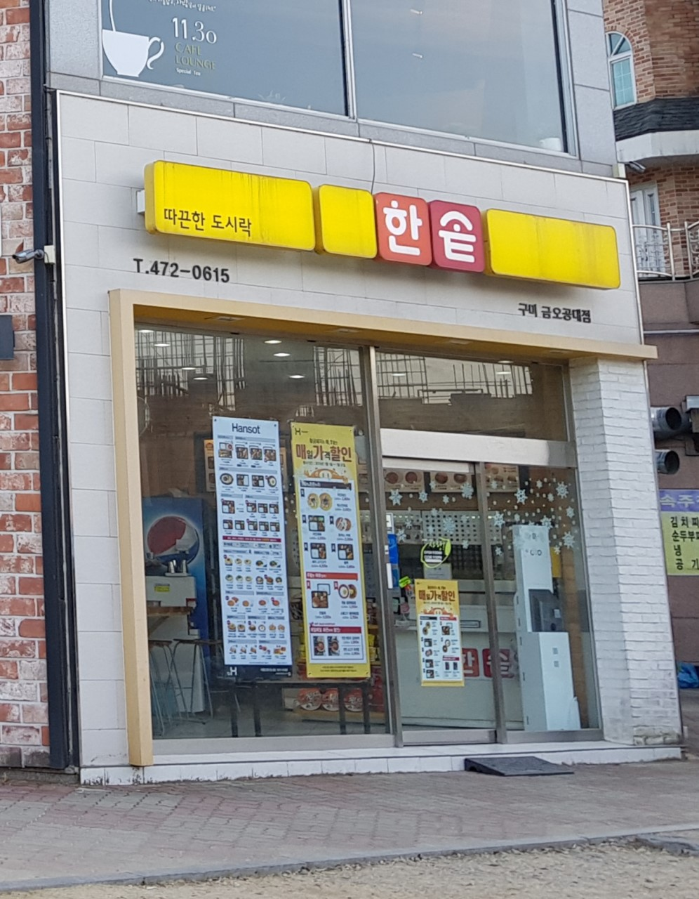

주요성과
컴퓨터소프트웨어공학과의 학과 교육을 위한 노력은 그동안 여러 형태로 결실을 맺고 있다.
높은 취업률과 함께 정규직 취업률과 대기업 취업률에서도 높은 성과를 얻고 있다.
또한 졸업생 채용 기업체에 대한 만족도 조사에서 매우 높은 만족도를 보이고 있다.
이는 컴퓨터 관련 대학교육의 대표적 모범 사례로보고된 우리 학과의 체계적인 설계 교육에 의한 것이다.
스포츠스타
| 1행 1열(제목) |
1행 2열 |
1행 3열 |
| 2행 1열(제목) |
2행 2열 |
2행 3열 |
전문교양 교과목 교육과정 편성표 2017학년도 이후 : 학년, 구분, 1학기, 2학기, 과목코드, 과목명, 학점
| 학년 |
1학기 |
2학기 |
| 구분 |
과목코드 |
과 목 명 |
학점 |
구분 |
과목코드 |
과 목 명 |
학점 |
| 1 |
교필 |
LA0299 |
글쓰기와 발표 |
2-2-0-0 |
교필 |
LA0293 |
영어읽기와쓰기 |
2-2-0-0 |
| 교심 |
LA0264 |
리더십과커뮤니케이션 |
2-2-0-0 |
교심 |
LA0299 |
글쓰기와발표 |
2-2-0-0 |
|
|
|
|
교심 |
LA0271 |
세계문화의이해 |
2-2-0-0 |
| 계 |
3과목 |
6-6-0-0 |
|
|
4과목 |
8-8-0-0 |
| ㅁ공통필수 : 2과목 4학점 ㅁ학과지정선택 : 5과목 10학점 |

한솥 구미 금오공대점
네이버로 가기
 가격 이상의 가치가 담긴 다양한 메뉴를 확인해 보세요
가격 이상의 가치가 담긴 다양한 메뉴를 확인해 보세요